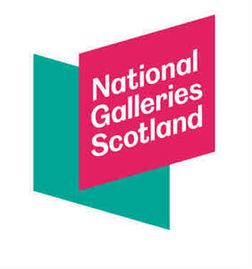

Trade Mark Journal No.2025/039 26 September 2025
UK00004264832 16 September 2025 (3,8,9,11,16,18,20,21,24,25,27,28,29,30,32,33,35)

- Class 3
- Non-medicated cosmetics and toiletry preparations; body cleaning and beauty care preparations; cosmetics; beauty serums; moisturising creams, lotions and gels; skin creams; skincare cosmetics; eye cosmetics; eye cream; eye gel; skin lotion; skin toner; cosmetic facial masks; make-up; make-up palettes; make-up primer; eye make-up; eyeliner; eye pencils; eye shadows; eyebrow cosmetics; eye make-up remover; face paint; beauty masks; blusher; concealers; face powders; foundation; lip cosmetics; lip gloss; lip liner; lipstick; mascara; facial wipes impregnated with cosmetics; make-up remover; face wash; exfoliants; soaps and gels; facial soaps; hand soap; hand scrubs; cosmetic body scrubs; shower and bath preparations; shower cream; shower gel; scented soaps; bath preparations; essential oils; aromatic oils for the bath; bath and shower foam; bath bombs; bath crystals (non-medicated); bath oil; bath soap; bubble bath; bath lotion; cosmetic bath salts; acne cleansers, cosmetic; aftershave creams; anti-ageing creams; anti-wrinkle creams; body butter; body creams; body oil; cleansing balm; cleansing lotions and gels; sun care preparations; after-sun creams; tanning oils (cosmetics); cosmetic nail care preparations; hand creams; lip balms; aromatherapy preparations; aromatherapy lotions; massage oils and lotions; nail polish; nail polish remover; non-medicated foot creams; hair preparations and treatments; hair conditioner; hair shampoo; hair curling preparations; hair spray; after-shave; perfumery and fragrances; colognes; deodorants and antiperspirants; body spray; household fragrances; fragrances for automobiles; reed diffusers; incense; reed diffusers; air fragrance reed diffusers; scented wax melts [fragrancing preparations].
- Class 8
- Gardening tools (hand operated-); gardening trowels; gardening shears; gardening scissors; weeding forks (hand tools); pruners (hand tools); vegetable peelers (hand tools); rakes (hand tools); sprayers (hand-operated tool) for garden use in spraying insecticide; shovels (hand tools); cutlery; knives, forks and spoons being tableware; cutlery for use by babies.
- Class 9
- Mobile phone cases; waterproof cases for mobile phones; holders for mobile phones; mobile phone screen protectors; earphones; headphones; audio speakers; selfie ring lights for smartphones; selfie sticks; mouse mats; mouse pads; batteries; battery chargers; portable chargers; wireless chargers; cameras; disposable cameras; camera tripods; video cameras; camera cases; bags for cameras; laptop bags; laptop sleeves; mobile applications; computer software applications; downloadable computer software applications; communication software; downloadable graphics for mobile phones; downloadable ringtones for mobile phones; electronic game software for mobile phones; publications in electronic format; downloadable publications; downloadable electronic publications; downloadable podcasts; audio books; computer games; electronic magazines; data carriers containing information recorded in electronic form; smart phones; smart watches; smart glasses; smart bracelets; smart rings; CDs; DVDs; CD players; CD cases; DVD players; DVD cases; blank CDs; blank discs; blank video cassettes; music cassettes; music tapes; portable music players; blank tapes; computer games; video game discs; radio alarm clocks; calculators; pocket calculators; binoculars; telescopes; magnifying lenses; spectacles; glasses; goggles; sunglasses; sports glasses; eyeglass cases; magnets; decorative magnets; portable digital luggage scales.
- Class 11
- Lighting; lightbulbs; mood lights; strip lights; strings of lights; reading lights; desk lights; garden lighting; lamps; solar lamps; candle lamps; oil lamps; bottle warmers; electric mug warmers; plate warmers; baby bottle warmers; cooling apparatus; beverage cooling apparatus; ice boxes; ice makers; electric hot water bottles; hot water bottles; fitted fabric covers for hot water bottles; air cooling apparatus and appliances; fans (electric -) for personal use; portable electric fans; table fans; heat pads; handwarmers (other than clothing); pocket warmers; hair dryers; air freshening apparatus; air freshener plug-ins; humidifiers; air humidifiers; electric humidifiers; room humidifiers (apparatus); air humidifiers for automobiles; USB-powered humidifiers for household use; de-humidifiers; air conditioners; air conditioners for automobiles; portable air conditioning; defrosters for vehicles; igniters; candle lighters; electric firelighters; domestic gas lighters; grill lighters; flashlights (torches); electric torches; pocket torches; glow sticks for lighting; neon lamps for illumination.
- Class 16
- Paper and cardboard; printed matter; photographs; work of art and figurines; art prints; printed art works; graphic art prints; graphic drawings; pictorial prints; photographic prints; fine art prints; colour prints; giclee prints; cartoon prints; lithographic prints; graphic prints and reproductions; graphic representations; art pictures; engravings [prints]; printed art reproductions; graphic art reproductions; reproductions of paintings; works of art made on paper; lithographic works of art; works of art and figurines of paper and cardboard; paintings; paintings and calligraphic works; pictures; watercolours; watercolour paintings; wall decorations of paper; 3D wall art made of paper or card; canvas prints; decoration and art materials and media; photo albums and collector’s albums; advertisement boards; bunting; posters; postcards; printed covers; printed cases; cards; printed cards; printed sewing patterns; printed publications; books; educational publications; printed educational materials; training manuals and printed publications; instructional and teaching materials; information books; promotional literature; programmes; magazines; flyers; leaflets; printed books; graphic art book; notebooks; sticker books; writing books; notepads; illustrated notepads; sketch books; journal books; books for children; comic books; colouring books; painting books; recipe books; story books; diaries; calendars; calendar desk stands; desk top planners; personal organisers; drawing materials and materials for artists; painting sets for artists; painting sets for children; drawing sets; paint boxes and brushes; pens; pencils; pen and pencil cases; pen sets; pen boxes; painting pencils; erasers; pencil sharpeners; markers; crayons; canvas for painting; paint trays; chalks for drawing; drawing stencils; rulers; stationery and education supplies; cases for stationery; stationery tins; book ends; paperweights; arts, crafts and modelling equipment; modelling clay; greeting cards; passport holders; mounted and/or unmounted photographs; book covers, book marks; car stickers; drip mats of paper; paper towels; paper napkins; paper place mats; paper table cloths; paper coasters; printed transfers for embroidery or fabric appliques; plastic sheets, films and bags for wrapping and packaging; wrapping paper; gift boxes; beer mats; place mats and coaster of paper or card; stickers; paper badges.
- Class 18
- Leather and imitations of leather; luggage and carrying bags; bags; travel bags; tote bags; duffel bags; athletics bags; gym bags; handbags; handbags for men; backpacks; satchels; briefcases; holdalls; leather bags; shoulder bags; beach bags; book bags; belt bags; boot bags; cross-body bags; shoe bags; shopping bags; towelling bags; toilet bags; toiletry bags; make-up bags; cosmetic bags; knitted bags; waist bags; weekend bags; work bags; umbrellas and parasols; umbrella covers; umbrella bags; umbrellas for children; golf umbrellas; collars, leashes and clothing for animals; belts (leather shoulder -); purses; chain mesh purses, not of precious metal; coin purses; change purses; clutch purses; cosmetic purses; evening purses; leather purses; purses, not of precious metal; wallets; pocket wallets; business card cases; credit card holders; key cases; articles of luggage, travel luggage and travel bags; luggage straps; plastic and metal and rubber luggage tags; roller suitcases, wheeled suitcases; bags for carrying pets; pet clothing; dog apparel; dog collars; dog leads; wash bags (not fitted); parts and accessories for all of the aforementioned.
- Class 20
- Statues, figurines, works of art, ornaments and decorations, made of wood, wax, plaster, bone or ivory; plaques (decorative wall -) [furniture] not of textile; mirrors, wall mirrors, hand mirrors, frames for mirrors; picture frames, photo frames; furniture and parts therefor; furniture for house, office and garden; display furniture; seats, benches, chairs, tables, desks, dressers, pouffes and footstools, bookcases, shelving units; garden and outdoor furniture; furniture shelves and racks; storage furniture and units; antique and antique reproduction furniture and antique style furniture; leather, wooden, glass, rattan and upholstered furniture; furniture incorporating beds; upholstered convertible furniture; furniture and furnishings; fitted fabric furniture covers; clothes hangers, clothes stands and clothes hooks; padded and stuffed furniture, seat pads, cushions, bean bag cushions; cushions [furniture]; inflatable pillows; inflatable cushions, not for medial use; inflatable mattresses, other than for medical purposes; neck pillows; inflatable neck support cushions; maternity pillows; sleeping mats; u-shaped pillows; storage cases, chests, baskets and units [furniture]; pet cushions, beds for pets; bedding (except linen); picnic baskets (not fitted); pedestals for plant pots; combination kneeler and seat for gardening; decorations of plastic for foodstuffs; plastic cake decorations and cake toppers; dreamcatchers (decoration); wind chimes; safety locks (non-metallic, non-electric); padlocks, not of metal; bicycle locks, not of metal; keys (non-metallic -) for opening locks; furniture for doors (non-metallic).
- Class 21
- Household or kitchen utensils and containers; cookware and tableware, except forks, knives and spoons; crockery; porcelain ware, porcelain articles for decorative purposes; earthenware; dinnerware; dinnerware of porcelain; tableware; tableware, cookware and containers; oven-to-tableware; ceramic tableware; coasters [tableware]; glass tableware; dishes (household utensils); bowls; plates; decorative plates; souvenir plates; ceramics for kitchen use; hollowware; ceramic hollowware; cups and mugs; tea cups; coffee mugs; egg cups; compostable cups; ceramic mugs; porcelain mugs; insulated mugs; travel mugs; thermal insulated containers for food or beverages; insulated sleeve holders for beverage cans; drinking flasks; thermal flasks; lunch boxes; picnic boxes; sandwich boxes; teapots; coffee pots; glassware; beverage glassware; painted glassware; whisky glasses; wine glasses; beer glasses; shot glasses; cocktail glasses; bottles; water bottles; plastic bottles; reusable bottles; vacuum bottles; bottle openers, electric and non-electric; corkscrews, electric and non-electric; drinking straws; jars for household use; decanters; jugs; bakeware; baking utensils; cookie jars; cutting boards; trays (household); plant pots; flower pots; planters of pottery; gardening gloves; watering cans; vases; statues, figurines, plaques, sculptures, and works of art, made of porcelain, terra-cotta, glass, china, crystal or earthernware; jewellery dishes; candle holders; tealight holders; candle sticks; napkin holders; fragrant and essential oil burners; hair brushes; hair combs; dish cloths; cases for personal hygiene products; dog food scoops; pet feeding bowls; pet drinking bowls; parts and fittings for all the aforesaid goods.
- Class 24
- Textiles and textile goods; textiles and substitutes for textiles; household textiles; textiles for furnishings; household linen; kitchen towels; hand towels; dish towels; tea towels; tea cloths; towels; bath towels; beach towels; golf towels; face towels of textiles; textile hair drying towels; yoga towels; washing mitts; curtains; door curtains; window curtains; curtain fabric; shower curtains; drapes; bed linen and table linen; cloth coasters; place mats of textile; cloth napkins; dish towels; fabric table runners; fabric table toppers; table runners; plastic table cloths; sofa blankets; bed blankets; children’s blankets; cot blankets; bed covers; bed quilts; bed sheets; mattress covers; throws; bed throws; bed clothes; comforters; covers for cushions; duvets; pillowcases; silk blankets; hooded blankets; sleeping bags; travelling blankets; travelling rugs; furniture covers; tapestries of textile; wall hangings; tapestry (wall hangings) of textile; canvas for tapestry or embroidery; tartan travelling rugs; tartan piece goods.
- Class 25
- Clothing, footwear and headgear; shirts; t-shirts; sweatshirts; polo shirts; dress shirts; dress pants; sport shirts; sports clothing; jogging suits; trousers; jeans; pants; casual trousers; shorts; tank tops; rainwear; waterproof trousers; skirts; dresses; dungarees; sweaters; pullovers; gilets; jackets; coats; raincoats; capes; snow suits; knitwear; robes; hats; caps; headbands; neckerchiefs; bandanas; berets; beanies; face masks [fashion wear]; sun visors; gloves; fingerless gloves; belts; scarves; silk scarves; neck scarves; shawls; knitted clothing; sleepwear; pyjamas; underwear; vests; boots; shoes; sneakers; trainers; sandals; casual footwear; slip-on shoes; beach shoes; booties; wellington boots; walking shoes; socks; bed socks; slipper socks; swimwear; articles of clothing made of leather; aprons.
- Class 27
- Wall hangings (non-textile); mural hangings (non-textile); wallpaper; floor coverings; carpets, rugs and mats; textile floor mats for use in the home; bathmats; rubber bath maths; matting; linoleum.
- Class 28
- Games, toys and playthings; board games; educational games; electronic board games; party games; quiz games; chess games; playing cards; card games; checkers (games); skittles (games); table-top games; sports games; balls for games; ball nets; marbles for games; dice games; puzzles; jigsaw puzzles; cube puzzles; wooden toys; battery operated toys; jump ropes; kites; musical games; music box toys; toy cars; play figures; action figure toys; bobblehead dolls; buckets (playthings); building blocks (toys); craft model kits; stuffed toys; teddy bears; soft toys; dolls; fabric toys; articles of clothing for toys; accessories for dolls; drawing toys; fidget toys; finger puppets; hand puppets; costumes being children’s playthings; sand toys; toy buckets and spades; sandboxes (playthings); indoor play tents; inflatable bath toys; toys for infants; play mats containing infant toys; infant development toys; toy hand tools; toy model hobby craft kits; toy gardening sets; toys for animals; toys for pets; decorations for Christmas trees; Christmas tree ornaments; Christmas crackers; Christmas stockings.
- Class 29
- Meat, fish, poultry, and game; fish, seafood and molluscs; seafood; cheese; butter; cheese products; cream; dairy products; dairy desserts; milk; milk beverages; margarine; meat extracts; preserved, frozen, dried and cooked fruits and vegetables; jellies, jams, compotes; marmalade; fruit and vegetable spreads, pastes and purees; spreads and pastes made from nuts and pulses; plant based milk substitutes; yoghurt; cooking oil; fruit conserves; processed fruits, fungi and vegetables; processed including nuts and pulses; canned fruits, vegetables and pulses; dried nuts and pulses; nut-based snack foods; fruit and vegetable based snack foods; potato-based snack foods; potato crisps; potato chips; potato sticks; fried potatoes; potato fries; meat-based snack foods; prepared meals consisting principally of meat, fish, poultry, and game; prepared meals consisting principally of vegetables; prepared meals consisting primarily of meat substitutes; snack food containing meat, fish, poultry, and game; sausages; snack food containing vegetables; snack food containing soy; coleslaw; guacamole [mashed avocado]; hummus [chickpea paste]; prepared nuts; edible nuts and seeds; edible dried flowers; processed edible flowers; processed edible flowers in crystallized form; processed, edible seaweed; cooked truffles; dates; olives; dried fruit mixes; fruit desserts and salads.
- Class 30
- Baked goods, confectionery and desserts; coffee; coffee beans; ground coffee; ground coffee beans; flavoured coffee; tea; fruit flavoured tea (other than medicinal); herbal tea; peppermint tea; chai tea; jasmine tea; green tea; cereals; bread; candy; cereal bars and energy bars; chocolate; chocolate based products; chocolate bars; chocolate pastes; chocolate fudge; chocolate truffles; chocolate brownies; chocolate candies; chocolate confectionery; custard; toffee; hot chocolate; hot chocolate mixes; pastries, cakes, tarts and biscuits (cookies); savoury biscuits; cheese-flavoured biscuits; chocolate biscuits; shortbread; shortbread biscuits; scones; wafer biscuits; ginger bread; muffins; flapjacks; sweets; spices; salt; honey; natural honey; sugars; sweet glazes and fillings; syrups and treacles; golden syrup; chocolate syrup; ice cream; frozen yoghurt; ice lollies; sorbet; coffee substitutes; doughs, batters, and mixes therefor; dried and fresh pastas, noodles and dumplings; yeast and leavening agents; yeast, hops (processed); malt-based food preparations; sauces; marinades containing spices; mixed spices; batter; batter mixes; pastry mixes; puff pastry; filo pastry; pastry dough; stuffing mixes; meat pies; pies containing fish; pies containing poultry; pies containing game; flavourings made from meat and meat substitutes; sandwiches containing meat; seasoned coating for meat; seasoned coating for fish; seasoned coating for poultry; flavourings made from fish; pastries consisting of vegetables and fish; pastries consisting of vegetables and poultry; flavourings made from poultry; prepared meals consisting primarily of rice; pasta-based prepared meals; noodle-based prepared meals; pizzas; chewing gum.
- Class 32
- Beer and brewery products; craft beer; lager, stout, ale, pale ale, porter, bock, saison, wheat beer, malt beer, sour beer, non-alcoholic beer, low-alcohol beer, flavoured beers; non-alcoholic malt beverages; non-alcoholic beverages; non-alcoholic carbonated beverages; flavoured carbonated beverages; soft drinks; soda beverages; non-alcoholic cider; non-alcoholic beer-flavoured cider; mineral and aerated waters; fruit beverages and fruit juices; ginger beer; malt beer; apple beer; seltzers; seltzer water; seltzer based beverages; fruit based beverages; processed hops for use in making beer; beer wort; malt wort; syrups and other preparations for making beverages; malt syrup for beverages; extracts of hops for beer making.
- Class 33
- Alcoholic beverages, except beers; wine; sparkling wine; alcoholic fruit beverages; alcoholic beverages containing fruit, spirits; spirits and liquors; gin; flavoured gin; flavoured tonic liquors; flavoured brewed alcoholic malt beverages, except beers; distilled beverages; distilled spirits; grain-based distilled alcoholic beverages; liqueurs; herb liqueurs; digestifs [liqueurs and spirits]; aperitifs; aperitifs with a distilled alcoholic liquor base; cocktails; alcoholic fruit cocktail drinks; canned alcoholic cocktails; pre-mixed alcoholic cocktails; alcoholic cocktails containing milk; alcoholic seltzers; spirit seltzer; alcoholic punches; rum; rum-based beverages; schnapps; sugar cane juice rum; vodka; preparations for making alcoholic beverages; wine coolers (drinks); insofar as whisky and whisky based alcoholic beverages are concerned, Scotch whisky and Scotch whisky based alcoholic beverages all complying with the specification of the (GI) Scotch Whisky.
- Class 35
- Retail services and online retail services in relation to cosmetics, make-up, skincare, perfumery and fragrances, candles and wax melts, household fragrances, jewellery, accessories, watches, stationery supplies, gardening tools, cutlery, mobile phone cases, earphones, headphones, audio speakers, cameras, batteries, battery chargers, portable chargers, sunglasses, eyeglass cases, magnets, laptop cases, laptop sleeves, CDs, DVDs, computer games, radio alarm clocks, calculators, binoculars, telescopes, magnifying lenses, mobile applications, lighting, air freshening apparatus, igniters, flashlights (torches), printed matter, works of art and figurines, prints, paintings, photographs, posters, notebooks, books, postcards, greeting cards, diaries, calendars, painting sets, art supplies, pens, pencils, paints, crayons, paintbrushes, cases for stationary, gift boxes, wrapping paper, luggage, bags, cosmetics bags, satchels, purses, wallets, animal collars, leashes and clothing for animals, umbrellas, household furniture, display furniture, garden and outdoor furniture, inflatable furniture, inflatable pillows, pet cushions, beds for pets, picnic baskets (not fitted), wind chimes, mirrors, picture frames, tableware, crockery, cups and mugs, tea pots, coffee pots, travel mugs, souvenir plates, vases, napkin holders, jewellery dishes, candle holders, hair brushes, pet feeding bowls, artwork, homeware, textiles, bedding, towels, dish towels, curtains, table toppers, wall hangings, tapestries of textile, tartan piece goods, clothing, footwear and headgear, aprons, wallpaper, rugs and mats, bath mats, toys, games, toys, playthings, balls for games, dolls, Christmas tree ornaments, Christmas crackers, Christmas stockings, hobby craft kits; retail services and online retail services in relation to foodstuff, snacks, non-alcoholic beverages, alcoholic beverages, tea and coffee; business management services; organisation of exhibitions and events for commercial and advertising purposes; advertising and promotional services; information, advisory and consultancy services in relation to all of the aforesaid services.
Board Of Trustees For National Galleries Of Scotland
Representative: Lawrie IP Limited